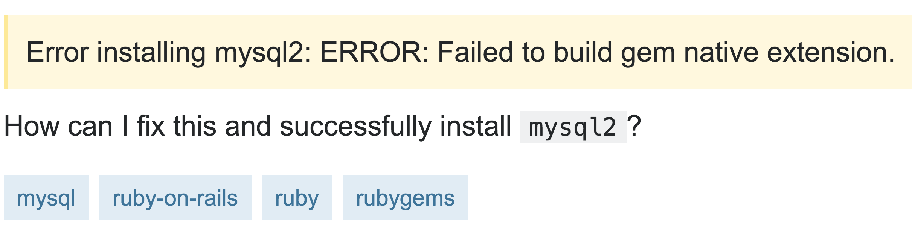
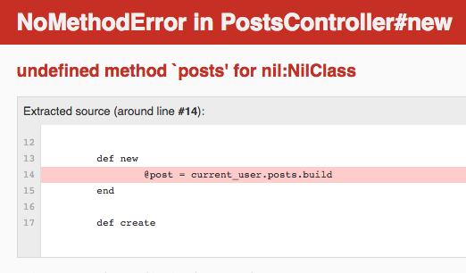

Effective Error Handling:
Learning from minor mistakes
with terrible error messages
Brittany Storoz
Sr Instructor & Tech Lead @TuringSchool
Github | brittanystoroz/presentations
Twitter | @brittanystoroz
"Rails is just a black box of magic,
I don't understand how everything is connected"
"Ahhhhh there so many files in this repo!
Where do I start?"
"I tried following the documentation, but there was none."
"There are so many different frameworks and libraries,
how do you choose your toolset?"
"I can write the same functionality in multiple different ways,
which is considered best practice?"
Error handling


This is all our fault.
Don't Hate Me
I'm a JavaScript Developer
"TODO: NEED A BETTER
ERROR MESSAGE HERE"
it can't possibly be this bad in other
languages, with other frameworks
...JavaScript must be the worst...


no implicit conversion of String into Integer (TypeError)
error handling is predictably terrible
Why is error handling so bad?
Errors are written for the developers,
not the users who run into them